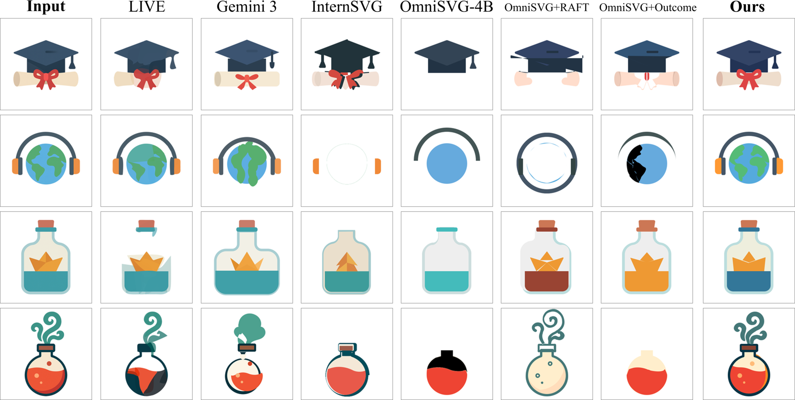
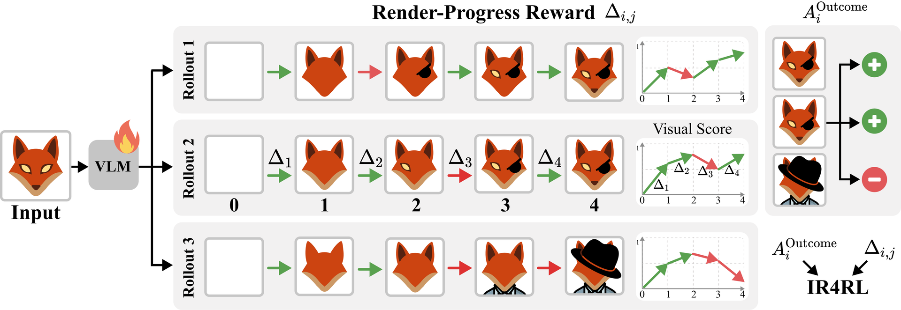
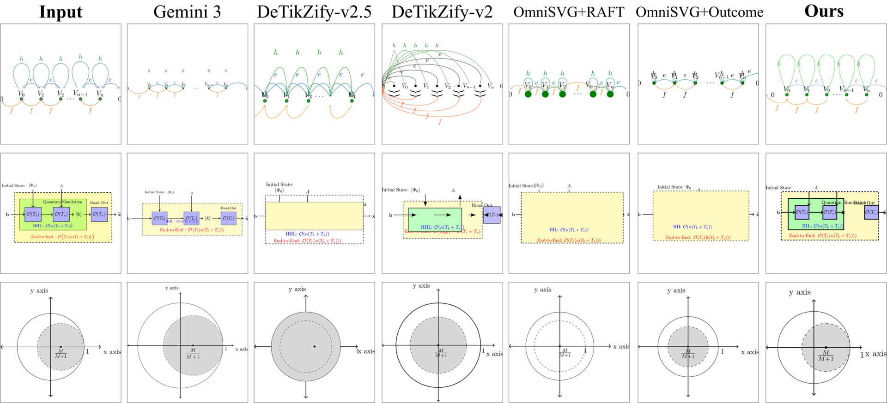

Image-to-SVG

Reinforcement learning is increasingly used to post-train vision-language models for image-to-code generation, such as generating SVG code from a reference image, by optimizing rewards computed from the final rendered output. However, relying on a single terminal reward provides sparse feedback that is poorly aligned with the contribution of individual tokens. A generated program may contain operations that accurately reproduce some parts of the target image alongside others that introduce errors, yet all tokens are trained from the same final outcome. We observe that many intermediate code prefixes are not only executable, but already produce meaningful partial renders that reflect progress toward the target. This property provides a natural source of denser supervision during generation. Based on this observation, we introduce IR4RL, an RL framework with a token-level render-progress reward that turns changes between intermediate renders into localized feedback for the generated sequence. We evaluate our approach on Image-to-SVG and Image-to-TikZ generation. Across both tasks, our method improves over supervised fine-tuning and standard GRPO, yielding new state-of-the-art open-source models. This shows that intermediate rendering provides a simple and effective source of process supervision for RL post-training of image-to-code models. Code and model weights will be released upon publication.

Image-to-code generation unfolds as a sequence of helpful and harmful decisions. Rollouts 1 and 2 reach similar final quality through different trajectories, while Rollout 3 makes early progress that later operations reverse. Outcome-only advantage collapses this information into a single scalar reward, scoring all tokens within a rollout equally. Our method complements it with render-progress rewards, leveraging changes in visual score between consecutive renders (the arrows \(\Delta_j\)).


@article{ir4rl2026,
title={Reinforcement Learning from Intermediate Renders for Image-to-Code Generation},
author={Kaduri, Omri and Feingold, Kate and Isola, Phillip and Dekel, Tali},
journal={arXiv preprint arXiv:XXXX.XXXXX},
year={2026}
}This research was made possible through a GPU compute resource grant funded by the Association of University Heads, the Council for Higher Education and the AI Research Compute Center.